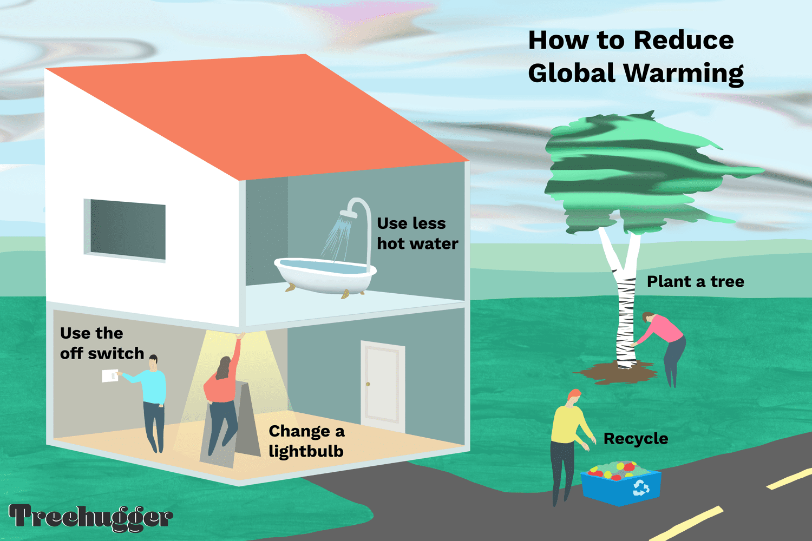

To mitigate climate change by reducing greenhouse gas emissions through renewable energy adoption, sustainable practices, and afforestation. Foster international collaboration to achieve net-zero emissions, adapt to environmental changes, and build resilient communities.
Welcome to our Website
Climate change refers to long-term shifts in global or regional weather patterns, primarily attributed to human activities like burning fossil fuels and deforestation. The increase in greenhouse gas emissions, such as carbon dioxide, traps heat in the Earth's atmosphere, leading to rising temperatures. This phenomenon contributes to melting ice caps, rising sea levels, extreme weather events, and disruptions to ecosystems, posing significant challenges to both the environment and human societies. Addressing climate change requires global cooperation and sustainable practices to mitigate its impact and build a resilient future.
Causes of Climate Change
Explore the various reasons that leads to climate changes in our environment
(1) Anthropogenic (Human-Induced) Causes: Burning of Fossil Fuels: Release of carbon dioxide from coal, oil, and natural gas combustion.
Deforestation: Reduction of carbon-absorbing forests, leading to increased atmospheric CO2.
(2) Industrial Activities: Emission of Greenhouse Gases: Production processes releasing methane, nitrous oxide, and fluorinated gases.
(3) Land Use Changes:Agriculture Practices: Methane emissions from livestock and rice paddies, and land-use changes affecting carbon storage.
(4) Natural Causes: Volcanic Activity: Releases ash and gases, but human activities contribute more significantly.
Solar Radiation Variations: Natural shifts in the sun's energy output impacting climate.
(5) Waste Management:Decomposition of organic waste in landfills generates methane.
(6) Agriculture Practices: Livestock farming releases methane, a potent greenhouse gas.
Pesticide use and land-use changes impact ecosystems.
Precautions for Climate Change
Mitigate climate change by embracing renewable energy, sustainable practices, and global cooperation to ensure a resilient and environmentally conscious future."
There are few measures taken for precautions related Climate Change. They come in the form of:
(1)Transition to Renewable Energy:Prioritize and invest in clean, renewable energy sources like solar, wind, and hydropower to reduce reliance on fossil fuels and minimize carbon emissions.

(2)Reforestation and Afforestation:Implement large-scale tree planting initiatives to absorb carbon dioxide and enhance carbon sinks, promoting biodiversity and restoring ecosystems.
(3)Energy Efficiency Measures:Improve energy efficiency in industries, buildings, and transportation through technological advancements and sustainable practices, reducing overall energy consumption and emissions.
(4) Sustainable Agriculture:Encourage and adopt sustainable farming practices that reduce emissions, conserve soil health, and promote carbon sequestration in agricultural lands.
(5) International Cooperation:Foster global collaboration to implement and strengthen climate agreements, policies, and initiatives that aim to collectively address climate change and its impacts.
(6)Education and Advocacy:Increase awareness about climate change and its consequences, promoting education and advocacy to inspire individuals and communities to adopt sustainable lifestyles and practices.
(7) Adaptation Planning:Develop and implement strategies to adapt to the impacts of climate change, including infrastructure improvements, water resource management, and measures to protect vulnerable communities.
(8)Circular Economy Practices:Embrace a circular economy approach that reduces waste, promotes recycling, and minimizes the environmental impact of resource extraction and production processes.
(9) Green Urban Planning: Design cities with green spaces, sustainable transportation options, and energy-efficient infrastructure to mitigate the urban heat island effect and reduce overall carbon footprint.
(10) Research and Innovation: Invest in research and development of new technologies and innovations that can further mitigate and adapt to climate change, promoting a more sustainable and resilient future.
Climate Changes Solutions
(1)Renewable Energy Transition :Shift from fossil fuels to renewable energy sources like solar, wind, and hydropower to reduce greenhouse gas emissions and promote sustainable energy practices.
(2) Energy Efficiency Improvements: Implement and incentivize energy-efficient technologies and practices in industries, buildings, and transportation to decrease overall energy consumption and emissions.
(3) Afforestation and Reforestation: Plant trees on a large scale to absorb carbon dioxide, enhance biodiversity, and restore ecosystems, acting as natural carbon sinks.
(4)Sustainable Agriculture: Promote and adopt sustainable farming practiCarbon Capture and Storage (CCS)ces that reduce emissions, conserve soil health, and enhance carbon sequestration in agricultural lands.
(5)Carbon Capture and Storage (CCS):Develop and deploy technologies that capture and store carbon dioxide emissions from industrial processes and power plants to prevent them from entering the atmosphere.
(6)International Cooperation:Strengthen global collaboration through international agreements and initiatives to collectively reduce emissions, share technologies, and address the impacts of climate change.
(7)Circular Economy Practices:Adopt a circular economy approach that minimizes waste, encourages recycling, and reduces the environmental impact of resource extraction and production.
(8)Adaptation Strategies:Develop and implement strategies to adapt to the impacts of climate change, including resilient infrastructure, water management, and measures to protect vulnerable communities.
"Protecting against climate change involves transitioning to renewable energy, promoting sustainable practices, preserving ecosystems, and fostering international collaboration for a resilient and sustainable global environment."
Future of Climate Change
The future of climate change remains uncertain as human activities continue to drive global warming. Rising temperatures, melting ice caps, and extreme weather events are expected to intensify, posing significant challenges for ecosystems and communities worldwide. The need for urgent and coordinated action to reduce greenhouse gas emissions is crucial to mitigate the worst impacts. Adaptation measures, such as resilient infrastructure and sustainable practices, will become increasingly vital in the face of changing climatic conditions. International cooperation and agreements are essential to address the transboundary nature of climate change and ensure collective efforts toward a sustainable future. Advances in technology and innovation hold promise for developing new solutions to combat climate change and transition to a low-carbon economy. The role of education and awareness becomes paramount in fostering a global understanding of the consequences of climate change and encouraging responsible environmental stewardship. The future also hinges on policy decisions that prioritize environmental conservation and promote a shift towards greener, more sustainable practices across sectors. While challenges persist, a collective commitment to sustainable development offers hope for a future where the impacts of climate change are mitigated, and the planet is preserved for future generations.
Contact Us
Please contact us for any knowledge regarding climate changes .